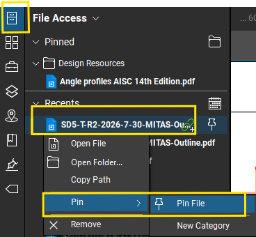

Pinning a Document
- Open the File Access panel.
- Locate the document under Recents.
- Right-click the file.
- Select Pin → Pin File.
- The document will appear in the Pinned section for quick access.
Tip: Pinned files remain readily accessible from the File Access panel.
Example:
